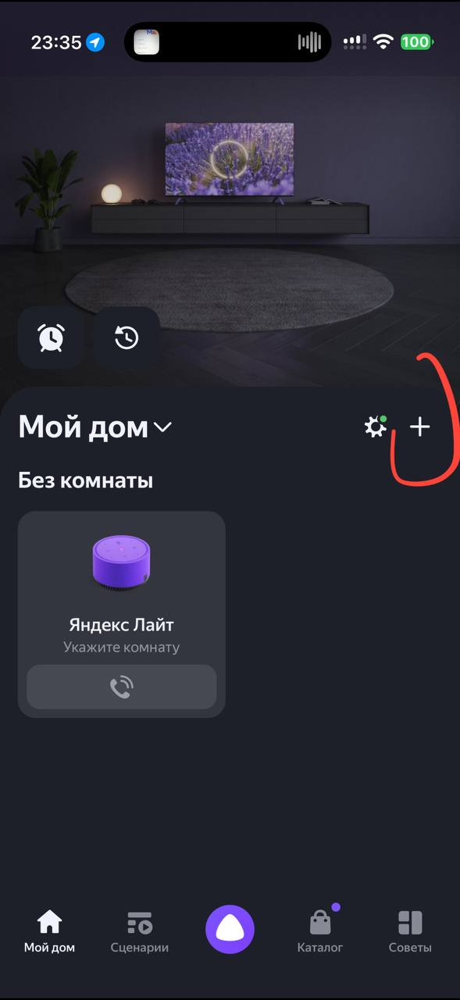
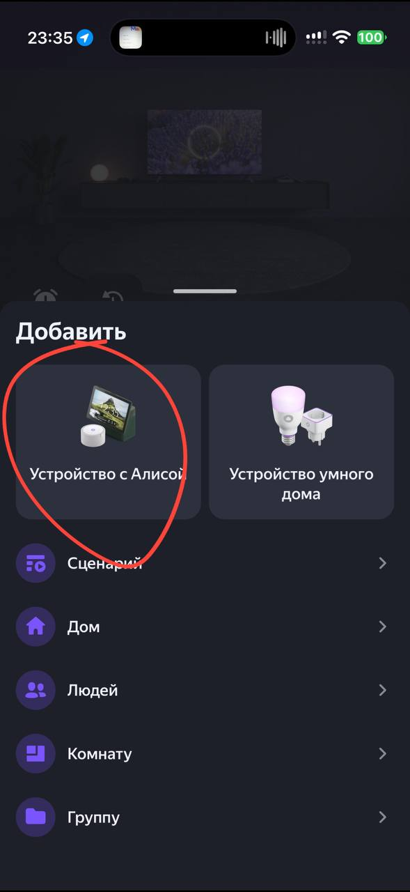
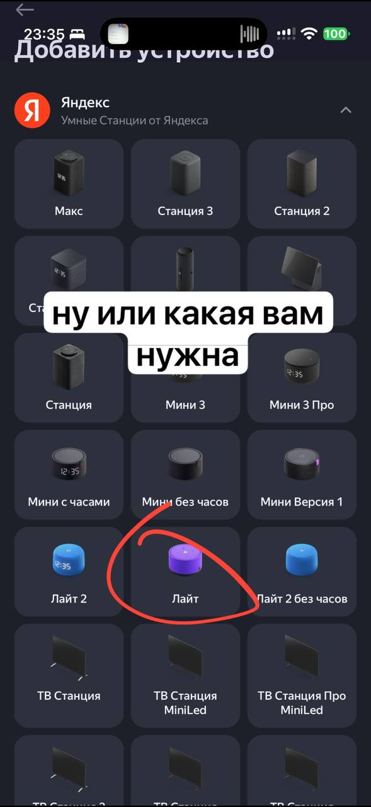
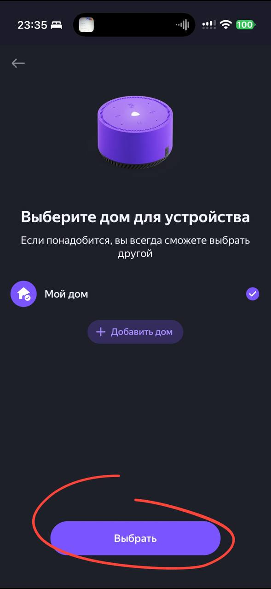
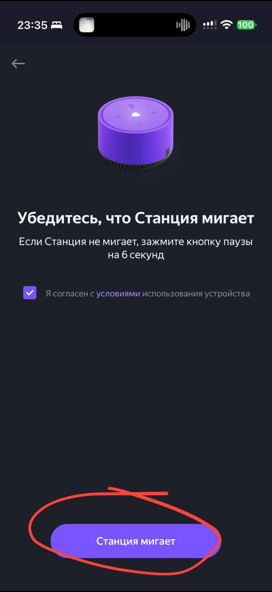
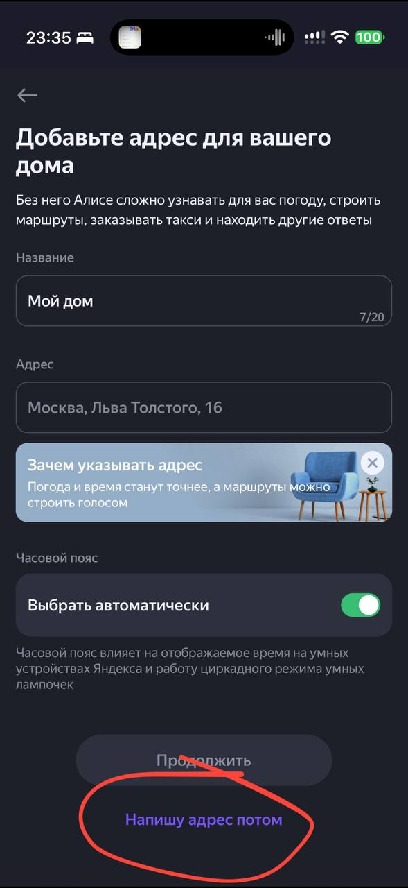
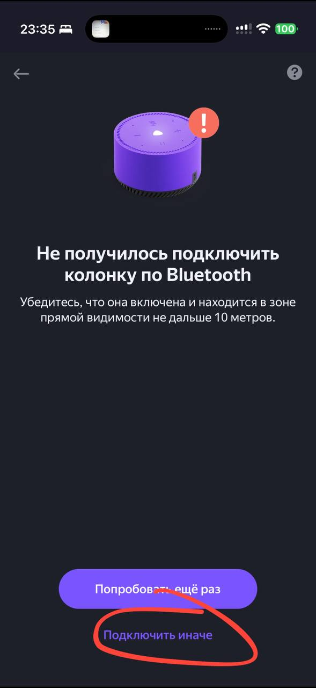
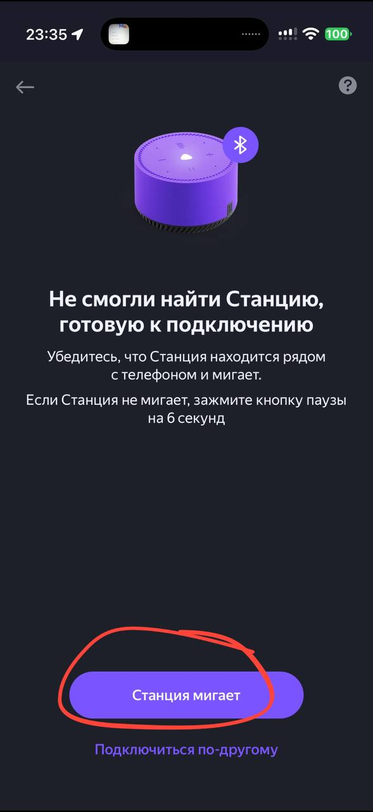
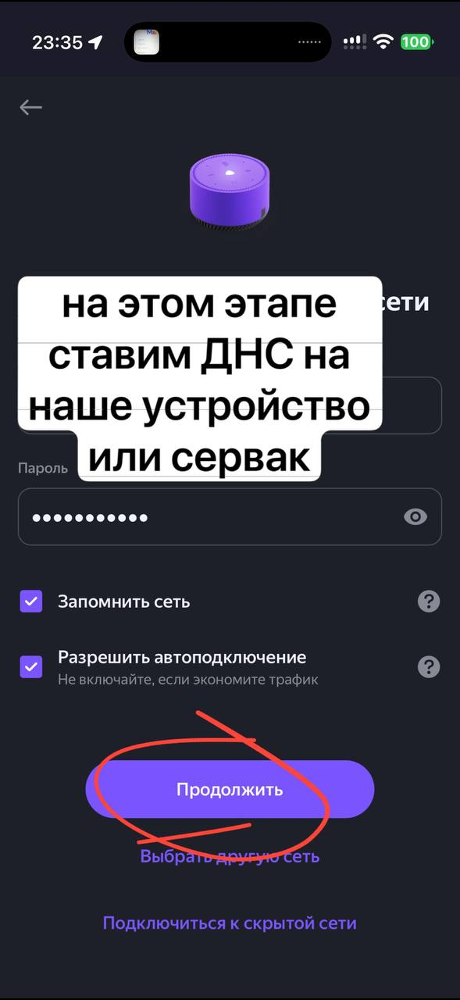
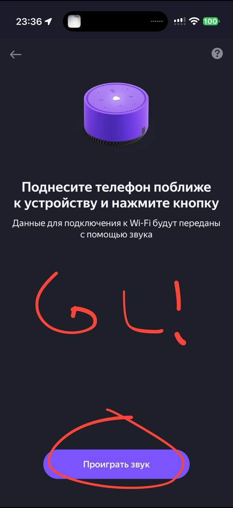

Шаг 1. Root по сети: подмена DNS¶
Сетевой ADB с правами root — без разборки корпуса, пайки и программатора, примерно
за пятнадцать минут. Способ подходит Мини, Мини 2, Мини 3, Миди, Станции 2, Станции 3,
Стрит, Умному хабу и Лайт первого поколения. В вики и в чате его называют коротко —
DNS-метод.
После этого шага переходите к шагу 2: SSH и отключение обновлений. Без него Яндекс может прислать обновление и закрыть доступ.
Что понадобится¶
- роутер, в котором можно поменять DNS (Keenetic, OpenWrt, MikroTik, Asus…), или второй Android-смартфон, раздающий Wi-Fi;
- компьютер в той же сети с утилитой
adb, инструкция по установке — как поставить; - смартфон с приложением «Дом с Алисой» (или «Яндекс»);
- колонка и её блок питания.
Сброс к заводским настройкам очищает раздел /data
Пользовательские настройки и всё, что вы туда ставили, пропадут, а колонку придётся заново привязать к аккаунту.
Инструкция¶
Выберите способ — оба дают сетевой ADB с root:
1. Сбросьте колонку к заводским настройкам¶
Кнопка и порядок зависят от модели — выберите свою.
- Отключите кабель питания, подождите несколько секунд и вставьте обратно.
- Сразу после этого зажмите кнопку паузы (▶‖) и держите 6–10 секунд, пока подсветка не станет жёлто-зелёной. Если зажать кнопку до подачи питания, сброса не будет.
- Отпустите кнопку: подсветка пульсирует голубым, колонка ждёт настройки.
- Отключите кабель питания.
- Зажмите кнопку отключения микрофона или паузы.
- Не отпуская кнопку, вставьте кабель.
- Держите 10–15 секунд, пока подсветка не замигает и Алиса не скажет о начале сброса.
Только для сборок до 21 октября 2026 года.
- Отключите кабель питания.
- Зажмите кнопку отключения микрофона и, не отпуская её, подключите питание.
- Держите кнопку 10–15 секунд, пока подсветка не замигает и Алиса не скажет о начале сброса.
- Отвяжите колонку от аккаунта в приложении и отключите кабель питания.
- Зажмите кнопку отключения микрофона и не отпускайте.
- Подключите питание: подсветка замигает жёлтым, кнопку всё ещё держите.
- Когда жёлтый погаснет, отпустите кнопку.
Проверено на заводской factory-12, см.
страницу модели.
- Отключите питание.
- Зажмите центральную сенсорную кнопку или кнопку микрофона сзади и подключите питание.
- Дождитесь звукового сигнала и сообщения о начале сброса.
Через 1–2 минуты колонка предложит настроить её через приложение.
2. Начните привязку в приложении — и остановитесь на Wi-Fi¶
- Включите на смартфоне Bluetooth и геолокацию.
- «Дом с Алисой» → «+» → «Устройство с Алисой».
- Дойдите до экрана «Выберите сеть Wi-Fi и введите пароль».
Нажатие кнопки подключения до смены DNS приведёт к ошибке
Не нажимайте «Подключиться» до выполнения шага 3: приложение не сможет связать колонку с аккаунтом, и настройку придётся начинать заново.
3. Включите DNS 179.254.167.126 на роутере¶
Колонка должна получить DNS 179.254.167.126. Выберите свой роутер:
Веб-интерфейс: «Сетевые правила» → «Домашняя сеть» → «Параметры IP и DHCP» →
DNS 1 = 179.254.167.126, поле DNS 2 очистите → «Сохранить».
Или CLI — подменяет только нужный домен, остальная сеть не затронута:
Откат после шага 2 — верните прежние DNS в веб-интерфейсе или выполните
no ip host quasar.yandex.net и system configuration save.
Веб-интерфейс: «Дополнительные настройки» → «Сеть» → «DHCP-сервер» →
Предпочитаемый DNS-сервер = 179.254.167.126, поле Альтернативный DNS-сервер
очистите → «Сохранить». В старом (зелёном) интерфейсе те же поля обычно лежат в
разделе «DHCP» → «Настройки DHCP».
Откат после шага 2 — верните прежние значения (обычно поля оставляют пустыми).
Команды выполняются по SSH на роутере. Выберите один способ:
Пересылка в dnsmasq только для трёх доменов. Остальные запросы обслуживаются как обычно, в том числе через Podkop:
uci add_list dhcp.@dnsmasq[0].server='/quasar.yandex.net/179.254.167.126'
uci add_list dhcp.@dnsmasq[0].server='/quasar.yandex.ru/179.254.167.126'
uci add_list dhcp.@dnsmasq[0].server='/scbh.yandex.net/179.254.167.126'
uci commit dhcp && /etc/init.d/dnsmasq reload
Правила действуют для этих доменов и их поддоменов у всех клиентов dnsmasq, а не только у колонки. Запросы клиентов напрямую к другим DNS-серверам этот способ не перехватывает.
Проверено на OpenWrt 24.10.5 с Podkop: Мини 2, прошивка
0.369.1.46.4793643989.20261020.299, и Миди, прошивка
0.369.1.46.4778262955.20261013.160.
Откат после шага 2 — удалите только добавленные записи:
Правило перехватывает DNS всей локальной сети
Podkop и другие настройки DNS после него могут перестать работать. Если в
сети такое есть, используйте пересылку только доменов активации, а перед
переходом на неё удалите правило Quasar-Unlock по инструкции отката ниже.
uci add firewall redirect
uci set firewall.@redirect[-1].name='Quasar-Unlock'
uci set firewall.@redirect[-1].src='lan'
uci set firewall.@redirect[-1].proto='tcp udp'
uci set firewall.@redirect[-1].src_dport='53'
uci set firewall.@redirect[-1].dest_ip='179.254.167.126'
uci set firewall.@redirect[-1].dest_port='53'
uci set firewall.@redirect[-1].target='DNAT'
uci commit firewall && /etc/init.d/firewall reload
Откат после шага 2 — удалите все правила Quasar-Unlock, даже если правило
добавляли несколько раз. Цикл проверен через sh -n, на роутере отдельно
не выполнялся:
В настройках локальной сети найдите DNS-серверы, которые роутер раздаёт по DHCP:
DNS 1 = 179.254.167.126, DNS 2 — пусто. Обычно это раздел
«Локальная сеть» / «LAN» → «DHCP-сервер» (Asus и другие).
Если DNS там задаётся только для подключения к провайдеру (WAN), это не подойдёт: используйте раздачу с Android.
Откат после шага 2 — верните прежние значения (обычно поле оставляют пустым или ставят IP роутера).
Если роутер не даёт менять DNS:
- Раздайте Wi-Fi с одного телефона.
- На раздающем телефоне поставьте DNS Changer и задайте
179.254.167.126. - Привязывайте колонку с другого телефона к этой точке доступа.
4. Подключите колонку к Wi-Fi¶
Вернитесь в приложение и нажмите «Подключиться». Колонка подключится к сети, сходит на сервер разблокировки, помигает и издаст звук готовности.
5. Зайдите по ADB¶
IP колонки посмотрите в списке клиентов роутера.
adb connect 192.168.1.120:5555 # IP вашей колонки
adb devices # должно быть: 192.168.1.120:5555 device
adb shell # приглашение «#» — это root
6. Сразу переходите к шагу 2¶
👉 SSH и отключение обновлений — сделайте это до того, как вернёте DNS.
7. Верните обычный DNS¶
После шага 2 уберите 179.254.167.126 из настроек роутера — команды отката есть на
вкладке вашего роутера в шаге 3. Доступ сохранится.
Мини 2: ADB выключается после первой синхронизации с облаком
На Мини 2 (0.369.1.46…299) Quasar выключает ADB, как только получает настройки
от настоящего quasar.yandex.net: в /data/quasar/quasar_adb.log появляется
Deactivate adb by quasmodrom config, порт 5555 закрывается. Маркеры в
/data/quasar/ это не спасает. SSH из шага 2 работает дальше, поэтому
сделайте шаг 2 до возврата DNS. ADB включается снова по SSH:
/system/vendor/quasar/activate_adb.sh --quasmodrom --network activate — до
следующей синхронизации, а Quasar делает её при каждом старте.
- OpenWrt: только домены активации или DNAT.
Альтернатива серверу 179.254.167.126: DNS и HTTPS поднимаются на вашем компьютере
(Windows, Linux или macOS), и колонка получает настоящий ответ Яндекса, в который
добавлено adbd.remoteActivation. Никаких внешних сервисов — только свой ПК и роутер
со сменным DNS.
Чем отличается от варианта 1: первый вариант обращается к внешнему серверу разблокировки. Второй — полностью локальный: вы видите запросы колонки, можете обновлять прошивку и включать ADB повторно после сброса. Подходит для тех, кто не хочет зависеть от чужого сервера.
1. Подготовьте ПК¶
Сервер и скрипты запуска для всех трёх систем лежат в репозитории lite-kit, там же установщик прошивок. Порты 53 (UDP и TCP), 80 и 443 на компьютере должны быть свободны.
- Установите Python 3.8 или новее, отметив галочку Add python.exe to PATH.
-
Склонируйте репозиторий:
Без git — скачайте ZIP-архив и распакуйте в
C:\lite-kit. -
Освободите порт 53: его иногда занимает служба «Общий доступ к подключению к Интернету».
-
Поставьте зависимости и склонируйте репозиторий:
-
Освободите порт 53: его обычно занимают
systemd-resolvedилиavahi.
2. Выберите прошивку¶
Сервер умеет раздавать колонке нужную сборку: если в firmware/ лежит .zip,
а версия колонки отличается — он сам предложит обновление.
Если на колонке уже стоит нужная версия (или файл прошивки уже лежит
в firmware/), ничего выбирать не нужно — переходите к запуску сервера обновлений.
Рекомендуемые версии прошивок — для моделей из таблицы совместимости ниже; на остальных вариант 2 не проверялся:
| Модель | Версия |
|---|---|
Лайт 1 (yandexmicro) |
0.369.1.46.4778262442.20261013.297 (сборка от 13.10.2026) |
Мини 1 (yandexmini) |
сборка 2025 года: 1.305.4.16.3237824040.20250721 |
Мини 2 (yandexmini_2) |
0.369.1.46.4778262943.20261013.299 (сборка от 13.10.2026) |
| Мини 3, Лайт 2, Миди, Станция 2 и остальные | желательно последняя сборка до обновления 20–21 октября 2026 |
Более новые сборки сертификат не принимают — ADB через get_sync_info
на них не поднимется.
Мини 2 на сборках после 21 октября 2026 года
Сборка 0.372.1.13.4794674157.20261021.302 своему серверу не доверяет: на 443
колонка обрывает TLS алертом unknown_ca (48), до get_sync_info дело не доходит.
В логе сервера этого не видно, только в tcpdump на его интерфейсе. Сброс возвращает
factory-образ 0.17.1.32.1145264292.20211203.factory-3, а он серверу доверяет: дальше
как у Лайт 1 ниже, сервер отдаёт .46 из firmware/yandexmini_2/. Проверено на Мини 2
(YNDX-00020): откат на 0.369.1.46.4778262943.20261013.299, ADB с root, затем
шаг 2.
Лайт 1 со сборкой 0.369.1.50… тоже открывается, но прошивка откатится на .46:
сервер сам отдаст её колонке во время настройки. Это несколько лишних минут и
работает только здесь, на своём сервере обновлений.
Почему на этой сборке нужен именно свой сервер
Сброс грузит factory-образ из раздела recovery
(0.5.1.20.1624028365.20230208.factory-4), и он серверу обновлений доверяет. После
POST /register factory-образ не запрашивает get_sync_info, а ждёт обновления:
сервер отдаёт ему .46 из firmware/, колонка скачивает 67 МБ, ставит прошивку и
через несколько минут перезагружается. Уже сборка .46 запрашивает get_sync_info
и включает ADB с root.
Поэтому сервер, который на check_updates отвечает только {"hasUpdate":false},
здесь не годится: factory-образ так и останется ждать обновления.
Проверено на Лайт 1 с 0.369.1.50…: откат на
0.369.1.46.4778262442.20261013.297, ADB с root, дальше шаг 2. Отдаёт ли
прошивку для отката сервер 179.254.167.126 из варианта 1, не проверялось.
Дождитесь завершения скачивания и установки
После начала скачивания (в логе [OTA] отдано …) не выдёргивайте питание: скачивание
67 МБ, установка и перезагрузка занимают несколько минут. Признак завершения —
[SYNC-REAL→] … adbd=on в логе. Если прервать, factory-образ в recovery цел,
но процесс придётся начать заново.
Скачать и положить в firmware/<версия>.zip можно установщиком:
Уже проверенные версии в меню помечены <-- проверено (ADB работает).
3. Запустите сервер обновлений¶
Скрипт напечатает IP этого ПК и проверит DNS. В логе (log\server.log,
log\yandex.log, log\local.log, log\dns.log) видно каждый запрос колонки.
4. Включите DNS на роутере¶
DNS 1 = IP компьютера с сервером обновлений, DNS 2 — пусто. Способы те же, что в
варианте 1 (вкладки шага 3), только вместо 179.254.167.126 — IP
компьютера.
Проверка с ПК:
5. Привяжите колонку в приложении¶
Действия те же, что в варианте 1: сброс → «Дом с Алисой» → «+» → «Устройство с Алисой» → дойти до выбора Wi-Fi. DNS включайте только на экране выбора сети — иначе приложение не сможет привязать колонку.
Особенность при настройке через телефон:
если телефон подключён к той же Wi-Fi-сети, что и колонка, запросы приложения к
quasar.yandex.net тоже уходят на сервер обновлений. Приложение не принимает его
сертификат (в логе сервера каждые пару секунд появляется ошибка alert certificate unknown),
и настройка срывается — например, с сообщением «Не получилось подключить колонку по Bluetooth».
Выключите на телефоне Wi-Fi, оставьте мобильный интернет и Bluetooth, а сеть и пароль
для колонки введите вручную. Тогда DNS можно включить и до сброса. Проверено на iPhone с Лайт 1.
Скриншоты: весь путь до экрана Wi-Fi (10 шагов)










Листайте вправо — это десять последовательных экранов приложения, девятый и есть момент, когда нужно включить DNS.
После «Подключиться» колонка сходит на ваш ПК, получит конфиг с adbd и откроет порт.
6. Проверьте ADB¶
Если порт закрыт:
В логе сервера обновлений должно быть:
7. Сразу закройте доступ¶
Пока не вернули DNS — переходите к шагу 2: SSH и отключение обновлений.
Сервер сам прошивку не навязывает: он отдаёт только ответ Яндекса (плюс adbd),
а обновления закрываются на шаге 2.
Совместимость варианта 2¶
Отдельно от таблицы выше — что реально проверено именно на своём сервере обновлений на компьютере:
| Модель | Статус |
|---|---|
Лайт 1 (yandexmicro, YNDX-00025) |
✅ проверено, в том числе с 0.369.1.50… (откат на .46) |
Мини (yandexmini, 1.305.4.16.3237824040.20250721) |
✅ проверено |
Мини 2 (yandexmini_2, YNDX-00020) |
✅ проверено, в том числе с 0.372.1.13… (откат на .46…299) |
Миди (cucumber, с часами) |
✅ проверено |
| Лайт 2, Станция 2, Макс, Дуо Макс, Умный хаб | ❔ не проверялось |
На проверенных моделях после привязки: /get_sync_info отдаёт adbd.remoteActivation=true,
adb connect <IP>:5555 проходит, adb shell id → uid=0(root).
Если не получилось¶
| Симптом | Что делать |
|---|---|
| Приложение пишет «Не удалось подключиться к Wi-Fi» | DNS включили слишком рано. Уберите DNS, сбросьте колонку и пройдите привязку заново, включая DNS только на экране ввода пароля Wi-Fi |
Колонка в сети, но порт 5555 закрыт (Connection refused) |
Отключите на роутере фильтрацию DNS (Яндекс.DNS, AdGuard и другие) и передёрните питание колонки. Проверка с компьютера: nslookup quasar.yandex.net должен вернуть 179.254.167.126 |
adb connect пишет unable to connect |
Компьютер и колонка должны быть в одной сети, не в гостевой с изоляцией клиентов. Проверьте доступность: ping <IP_колонки> |
Совместимость¶
| Модель | Статус |
|---|---|
| Мини 1, Миди, Станция 2, Стрит, Умный хаб | ✅ проверено |
| Лайт (1-го поколения), Мини 2 | ✅ проверено; сборки после 21.10.2026 — свой сервер обновлений с откатом на .46 |
Fiero Hi (партнёрская Лайт, blackthorn) |
✅ проверено на .50 — нужен полный заводский сброс (factory-образ шлёт get_sync_info), см. Fiero Hi |
| Мини 3 (bergamot) | ✅ до 21.10.2026; на новых сборках — retail CA и маркеры из factory |
| Лайт 2 (Plum) | ➡️ основной способ — retail CA из factory; DNS-метод — только сборки до 21.10.2026 |
| Станция 3 (orion) | ✅ проверено на заводской factory-13; свой сервер обновлений колонка не примет — причины в описании TLS |
| Станция Макс, Станция 1-го поколения | ❌ Android-платформа, способ не работает; для Макса есть ADB Max, для Станции 1 — AliceBridge |
Проверено на Мини 2 (YNDX-00020): стоковая 0.372.1.13.4794674157.20261021.302 своему
серверу не доверяет (unknown_ca); после сброса и отката на
0.369.1.46.4778262943.20261013.299 через свой сервер обновлений работают
ADB с root и SSH.
Как это работает¶
- Сброс возвращает колонку в заводское состояние:
/dataочищен. - При первом подключении колонка запрашивает настройки у
quasar.yandex.net. С DNS179.254.167.126запрос уходит на сервер разблокировки. - Сервер отвечает настройками, в которых сетевой ADB включён.
- Прошивка создаёт маркеры
/data/quasar/activate_adb_quasmodromи/data/quasar/activate_network_adbи запускаетadbdна порту 5555. - При каждой загрузке
onboot.shвызываетactivate_adb.sh check: пока маркеры на месте, ADB поднимается сам — DNS больше не нужен. На Мини 3 это не так: после возврата DNS ADB выключается, см. раздел про возврат DNS.